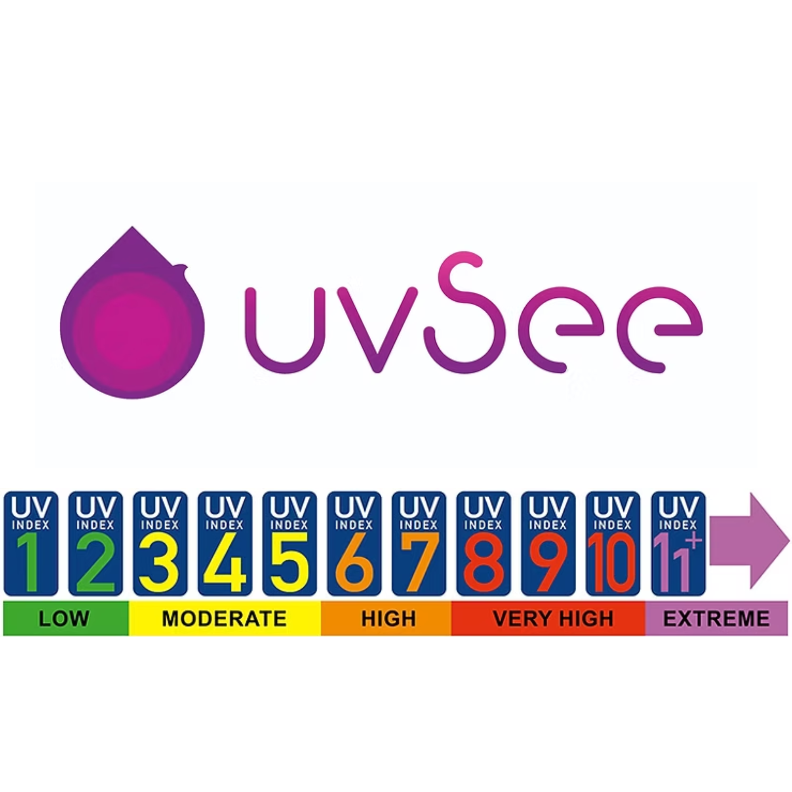
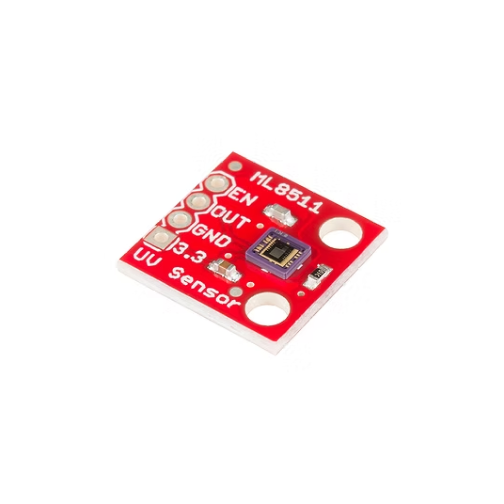

uvSee - Open Source UV Index Meter

uvSee is a handheld UV Index meter. The UV index is a measure of the level of solar UV radiation reaching the Earth’s surface. It is an educational tool developed by the World Health Organization (WHO) to raise public awareness of the risks of overexposure to UV in sunlight. Overexposure to solar UV radiation can increase your risk of developing skin cancer and eye disorders. The UV index ranges from 1 and 11+ and alerts people about the need to adopt sun-protective measures.
The higher the UV index, the greater the possibility is for sun damage to your skin and eyes and the less time it takes for harm to occur. At a UV index level of 3 and above there is a need to use sun protection. Even when the UV index is lower than 3 you should use sun protection if you are out in the sun for more than an hour.

In this project, I interfaced an UV Sensor ML8511 with ESP32 for measuring Ultra Violet Light Intensity in mW/cm^2. UV Radiation or Ultraviolet light radiation occurs from 10nm to 400nm wavelength in the electromagnetic spectrum. So to get effective output by UV light the GY/ML8511 sensor from lapis semiconductor helps a lot. The ML8511 UV sensor detects 280nm – 390nm light in a better way, this wavelength is categorized as part of the UVB-burning rays spectrum and most of the UVA-tanning rays spectrum. I purchase this sensor from Sparkfun. You can find this sensor in most stores like Rhydolabz, Tanotis & Thingbits.
The ML8511 sensor is very easy to use. It outputs an analog voltage that is linearly related to the measured UV intensity (mW/cm2). If your microcontroller can do an analog to voltage conversion, you can detect UV. It has Low supply current of 300uA and a low standby current of 0.1A. It comes with Small and thin surface-mount package (4.0mm x 3.7mm x 0.73mm(0.16″ x 0.15″ x 0.03″), 12-pin ceramic QFN).
The processed data is then shared to an android app using Bluetooth (Classic mode) in the ESP32 module. You can use any ESP32 module. But see to it that the pin configuration is as defined in the code.
You can find the source code and the android app (apk file) in my GitHub repository. Click here to access the source code.